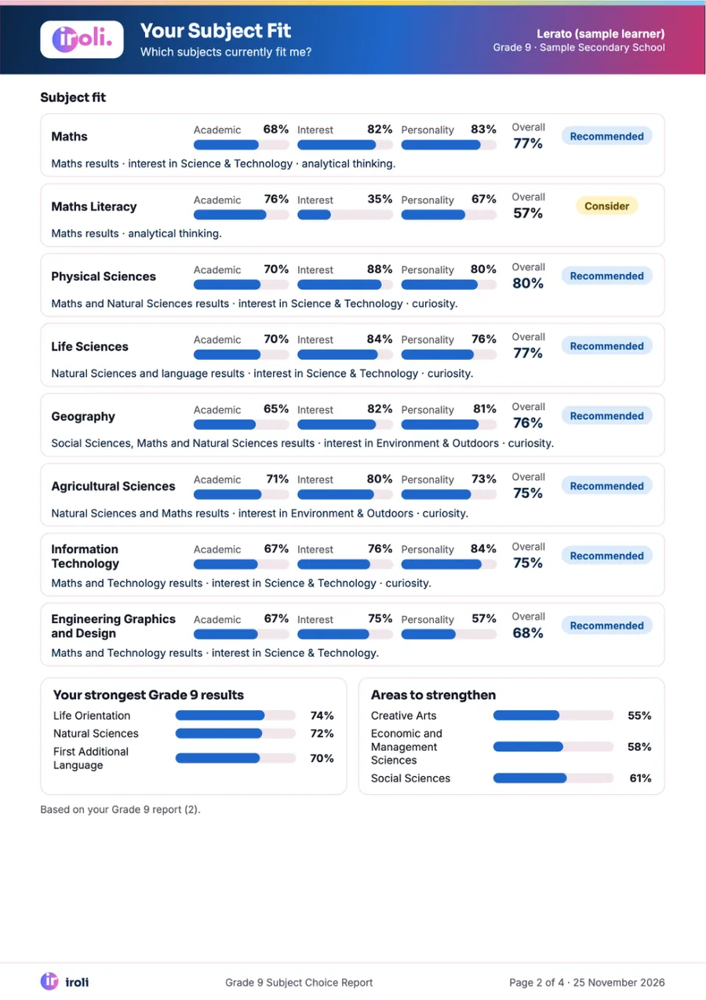
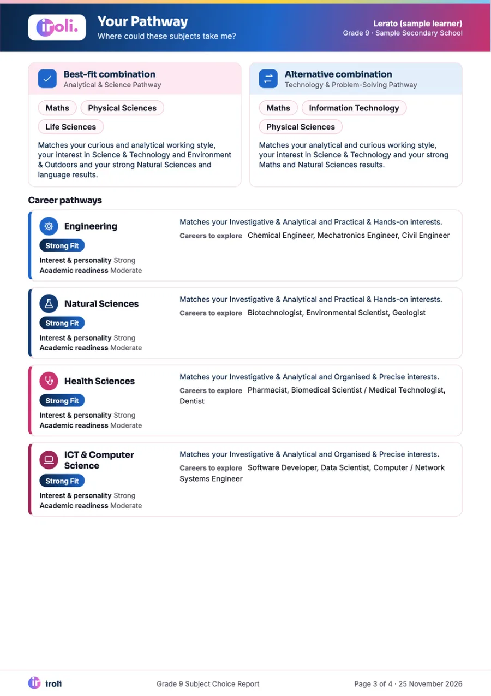

Sample report
See what a learner gets
The full Grade 9 Subject Choice Report for a made-up learner: their profile, subject fit, career pathways and next steps, on four pages.




This is a sample for a made-up learner. Every learner's report is built from their own answers and marks, and every result is a starting point for a conversation, never a verdict. Tap a page to see it full size.